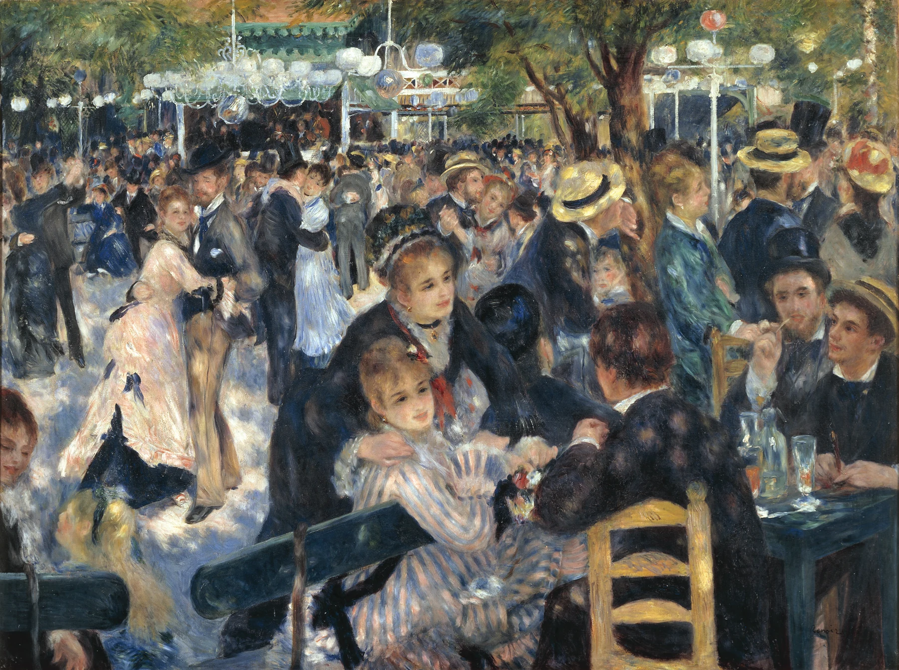

特別な服装は不要。歩きやすい靴、温度調整できる上着、小さめの荷物がいちばん実用的。
美術館へ初めて行くとき、意外と気になるのが服装です。「少しきれいな格好の方がいい？」「スニーカーで大丈夫？」。でも普通の展覧会なら、服装よりも長く立って歩けることの方がずっと重要です。作品に集中できる格好が、いちばん美術館向きです。
1. 一般的な美術館鑑賞にドレスコードはほぼない
展覧会を見に行くだけなら、スーツやきれいめの服を用意する必要はありません。普段着で大丈夫です。
むしろ、長く歩いたり立ったりするので、見た目より動きやすさと疲れにくさを優先した方が鑑賞に集中できます。
海外の大きな美術館や格式のある建物でも、通常の一般鑑賞で特別な正装を求められることは基本的にありません。周囲の人の服装もさまざまです。「美術館らしい格好」に合わせるより、その日の天候や移動距離に合わせる方が実用的です。
2. 服より靴を気にした方がいい
美術館では思っている以上に歩きます。展示室をゆっくり進み、戻り、ショップまで見るとかなりの距離になります。
履き慣れた靴がいちばんです。長時間立つのがつらい靴だと、作品より足の痛みが気になってしまいます。
立ち止まっている時間も、足には意外と負担がかかります。歩き続けるより、ゆっくり進んで何度も止まる方が疲れることもあります。新しい靴を試す日より、普段から履いているスニーカーや歩きやすい靴を選ぶ方が安心です。
3. 館内は少し涼しく感じることがある
作品保存のため、展示室の温度や湿度は管理されています。外が暑い日でも、館内に長くいると冷えることがあります。
薄手の羽織りものが一枚あると安心です。特に夏は、外との温度差を考えておくと快適です。
冬はコートを着たままだと暑く、夏は冷房で寒く感じることがあります。脱ぎ着しやすい服にしておくと、作品を見る途中で暑さ寒さが気になりにくくなります。厚い上着や傘など、手で持ち続ける物はロッカーへ預けるとさらに楽です。
4. 大きな荷物は鑑賞の邪魔になりやすい
大きなリュックや買い物袋は、混雑した展示室で気を使います。肩から下ろしたり、他の人や作品に当たらないようにしたりするだけで疲れます。
できれば荷物は小さく。大きな荷物がある日は、ロッカーやクロークを使うと鑑賞がかなり楽になります。
小さめのバッグでも、前に抱えるよう案内される館があります。背中のリュックは自分では後ろの距離が分かりにくく、混雑時には作品や人に近づきすぎることがあるからです。荷物を減らすことは、マナーというより自分の鑑賞を身軽にする準備だと考えると分かりやすいです。
5. ロッカーは遠慮せず使う
100円硬貨を入れて、利用後に硬貨が戻るタイプのロッカーもよくあります。館によって仕様は違うので表示を確認してください。
コートや大きな荷物を預けるだけで、展示室で両手が自由になります。図録を見るときも楽です。
6. 意外と気になるのは「音」
静かな展示室では、靴音やアクセサリー、バッグについた金具の音などが思ったより響くことがあります。
気にしすぎる必要はありませんが、普段から音が大きい靴やジャラジャラする小物は避けると、自分自身も落ち着いて見られます。
7. 内覧会や特別イベントは別
通常の展覧会鑑賞では普段着で問題ありませんが、招待制の内覧会や式典、レセプションなどは案内に服装指定がある場合があります。
その場合だけ、招待状や公式案内を確認します。普通にチケットを買って見に行くなら、そこまで構える必要はありません。
8. 迷ったら「長く歩ける普段着」で
結局のところ、美術館で大切なのは作品を見ることです。服装が気になって集中できないより、いつもの自分に近い服で行く方が自然です。
少しだけ意識するなら、歩きやすい靴・温度調整できる上着・小さめの荷物。この3つで十分です。

服装で迷って出かけるハードルが上がるくらいなら、普段着で行ってしまう方がいいと思います。美術館は「特別な人が行く場所」ではなく、散歩や映画と同じように気軽に寄れる場所です。何度か行けば、自分にとって疲れにくい服装も自然に分かってきます。
特別な服装は不要。歩きやすい靴、温度調整できる上着、小さめの荷物がいちばん実用的。